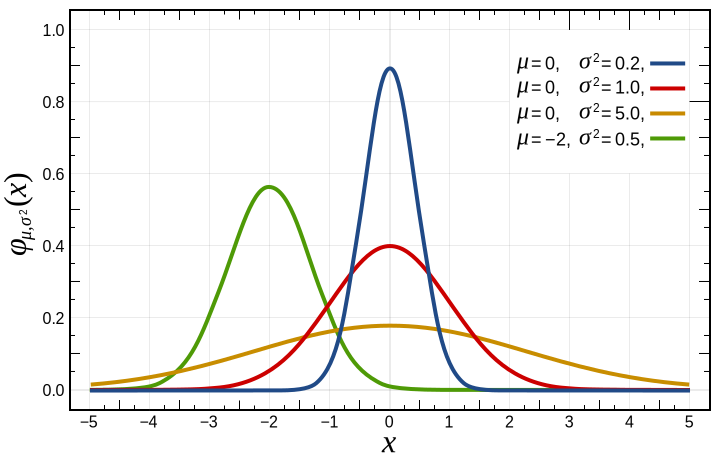

Rank
If you’ve ever played Xbox Live, Microsoft’s premium online gaming service, then you may be familiar with TrueSkill(tm), which is Microsoft’s matchmaking algorithm. It’s a brilliant method of ensuring games between players of varying skill levels remain “interesting.” Rank uses TrueSkill’s algorithm to rank various performance metrics for teams and players, from a fantasy football perspective.
A TrueSkill value is composed of two numbers, the mean and uncertainty. In mathematical terms, the mean is the “center” value of a Gaussian distribution (familiar bell curve, figure below), and the uncertainty is the standard deviation from that mean. The single value that represents the conservative, or marginal, value is calculated by subtracting 3 standard deviations from the mean. This is the value used to compare teams and players, and to create rankings.

TrueSkill’s real value, and one of the reasons we adopted it, comes from its ability to adjust quickly to new information. Since the single value is a conservative estimate, the true value is probably higher. So when a team or player logs a “victory,” his skill improves relative to the quality of that victory. Beat a good player, score raises more. Lose to a much worse player, score declines more.
Since the NFL provides small sample sizes, the algorithm must be able to adjust quickly and accurately. With TrueSkill, we can tune how fast a player’s Rank adjusts dynamically. So at the beginning of the season, when uncertainty is high, we make bigger movements, then slowly decrease the dynamics to be a little more stable. So it is possible to see wild swings early in the season, although this isn’t true of all metrics.
Another nice side effect is being able to calculate matchup quality, which drives our weekly rankings. TrueSkill calls this the Draw Probability, and Microsoft uses it to pit similarly skilled players together (matchmaking). But fantasy football doesn’t care about any of that. We want to identify mismatches and opportunity. Luckily, the matchups are already given to us, so we can figure out how juicy a matchup is by analyzing the draw probabilities of different player and team metrics. And we can also tune the algorithm to define how wide a gap the skill values must be to consider it a mismatch. This is the Beta value in TrueSkill terminology.
If you want to keep tunneling further into the math, you can read the TrueSkill White Paper.
OFFSEASON MODE
The 2019 Season begins rollout in late July. Get early access to start prepping.